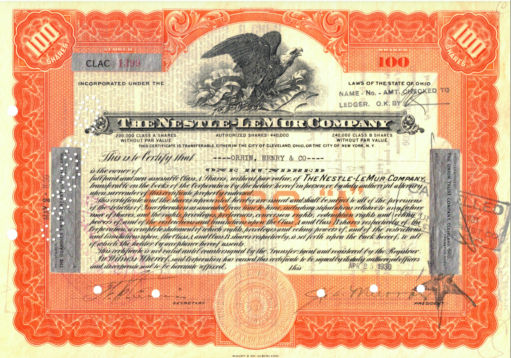
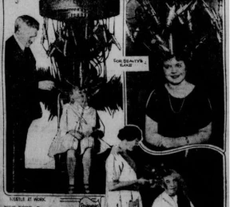

Company
The Nestle-LeMur Company emerged from the combination of the Nestle Company and the LeMur Company. This page documents the industrial development of the permanent wave based on historical sources.
An independent research archive
The industrial history of the permanent wave

The Nestle-LeMur Company emerged from the combination of the Nestle Company and the LeMur Company. This page documents the industrial development of the permanent wave based on historical sources.
An analysis of the industrial structure behind the Nestlé-LeMur Company and how the permanent wave became a scalable system within the global beauty industry.
Overview of Nestlé-LeMur products: permanent wave systems, hair colouring, styling and cosmetic extensions as part of an emerging beauty industry.
Analysis of the Nestlé-LeMur network, including connections between London, New York and European markets, based on advertisements and product distribution evidence.
Primary sources on the Nestlé–LeMur Company and the permanent wave industry, including newspaper reports, advertisements and archival material from the United States and Europe.
Explore the Nestlé-LeMur Blog and discover the industrial history of the permanent wave, cosmetics manufacturing, trademarks, beauty technology, and the American expansion linked to Charles Nessler and the early hair industry.
The Nestlé-LeMur Company represents a distinct stage in the history of the permanent wave: the transition from individual invention to structured industrial production.
While the early development of permanent hair waving is closely associated with Karl Ludwig Nessler, the later evolution of the technology was shaped by corporate organisation, manufacturing processes, and distribution networks in the United States.
Available evidence indicates that by the late 1920s, business activities connected to earlier London-based enterprises had developed into a more formalised company structure in the United States. Within this context, the Nestlé-LeMur Company illustrates how the permanent wave moved beyond invention and became part of an emerging industrial and commercial system.
Early references link the origins of these activities to London, particularly to enterprises operating under the name C. Nestle Co.
Subsequent mentions of:
LeMur Ltd., London (formerly C. Nestle Co.)
indicate a transitional phase, possibly connected to structural changes in the period surrounding the First World War.
Rather than representing a completely new entity, these references suggest continuity through reorganisation and renaming.
By the late 1920s, the centre of activity appears to have shifted to the United States.
Later sources associate the development of the Nestlé-LeMur Company with this period, pointing toward a phase of consolidation and expansion rather than a clearly documented single founding event.
During this stage, the company emerged as a manufacturer and distributor of cosmetic and hair-related products, reflecting a move toward industrial organisation and broader market presence.
Surviving products and trademark records show that the company developed a structured range of cosmetic systems.
These included:
permanent wave systems (e.g. Fleetwave and machineless applications)
hair colouring products (e.g. Colortint)
hair treatments and tonics
cosmetic preparations
branded shampoos such as Mother’s Darling
This portfolio reflects a broader shift within the beauty industry, where hair care evolved from individual craftsmanship into a system of reproducible and marketable products.
Archival material also includes financial documents associated with the Nestlé-LeMur Company, such as share certificates issued in the United States.
These documents indicate that the company operated within a formal corporate framework, including registered stock and institutional oversight.
References to financial intermediaries, such as the Guardian Trust Company in Cleveland, Ohio, suggest that the company was integrated into established financial structures.
This evidence supports the interpretation of the Nestlé-LeMur Company as a structured commercial enterprise rather than a purely local or informal operation.
Further evidence of the company’s development can be seen in its acquisition strategy.
In 1964, the Seaforth product line, originally introduced in the late 1930s, was acquired and integrated into the Nestlé-LeMur portfolio.
This indicates that the company combined internally developed products with established external brands, suggesting participation in broader consolidation processes within the cosmetics industry.
Various sources indicate that the company operated within a transregional framework.
References include:
London (LeMur Ltd.)
United States (production and corporate structure)
Switzerland (advertisements and local distributors such as Novavita AG, Zurich)
Caribbean (documented correspondence from Puerto Rico, 1928)
These elements suggest a network of communication and distribution extending beyond a single geographic region.
Taken together, the available evidence suggests that the Nestlé-LeMur Company formed part of a broader transformation within the cosmetics industry.
It connects multiple stages:
the technical invention of the permanent wave
its commercial expansion
and the emergence of structured, industrialised product systems
Rather than representing a single invention or isolated company, Nestlé-LeMur reflects the process by which technological innovation became part of a wider, international industry.
Charles Nessler – Biography
Permanent Wave – History and Technology
Industrial Development
Product Systems
Network and Distribution
Brand Names and Trademarks
Share certificate of the Nestlé-LeMur Company, United States, mid-20th century (archival material).



Have a document, photograph or historical reference to share?
archiv@nessler-dauerwelle.de